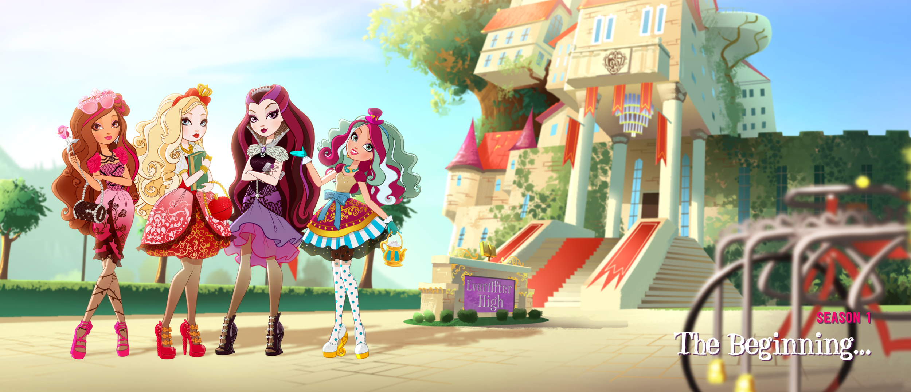

Ever After High
Welcome to the school where the children of famous fairytale characters learn to follow in their parents' footsteps. Every student is expected to live out the story written for them in the Storybook of Legends. But what if you don't want the ending that was chosen for you?
Royals and Rebels
Royals happily accept their destinies, like Apple White, who is ready to become the next Snow White. Rebels want to write their own stories, like Raven Queen, who does not want to become the next Evil Queen. Both sides are part of what makes the school so magical.
My Favorite Character
Write here who your favorite character is and why you love them.
Read more about Ever After High
